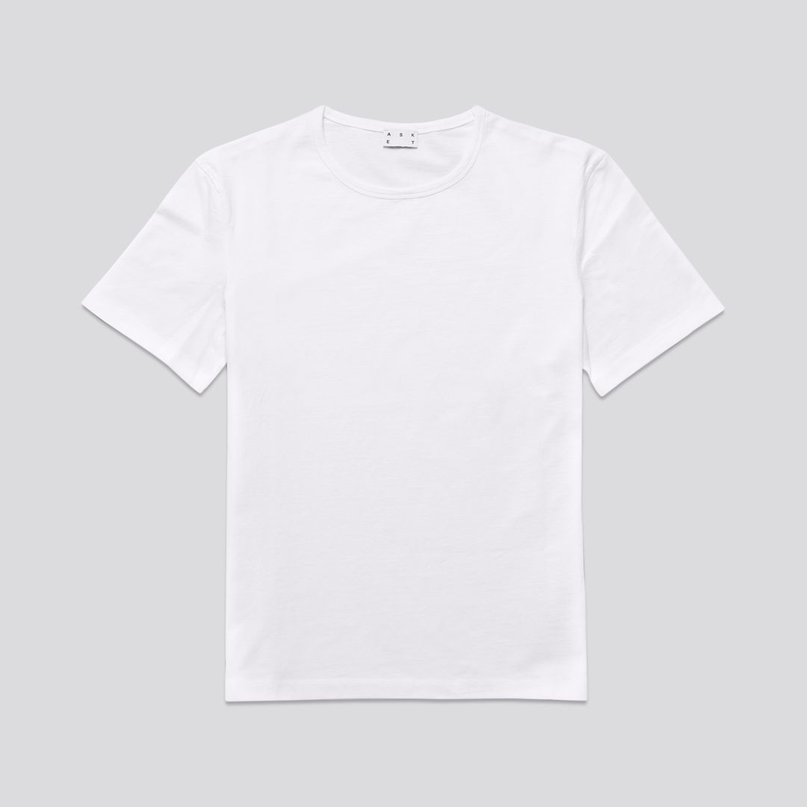

Use a shirt that is made out of 100% cotton and wash it beforehand.
Soak the shirt in a solution of water and soda ash for 10 minutes. Once it has soaked thoroughly squeeze out as much liquid as you can.
Start in the middle of the shirt and twist clockwise until you have a spiral shape. Place 3-4 rubber bands around the twisted shirt evenly spaced out.
Prepare the dyes according to the instructions on the bottles and then transfer mixed dyes into the squirt bottles.
Add the dyes to the shirt however you'd like. Try to make sure to the syes don't mix or else the colors will end up looking brown. I'd reccomend dying each tied off section a seperate color.
Once you've dyed the shirt seal it up in a plastic back and let it sit for 8 hours or overnight.
Run the shirt under warm water while you untie it. Once it is completely unwrapped, rinse it with cool water until it runs clear.
Wash your shirt in the washing machine by itself on hot with a little bit of soap. Allow it to air dry and you're done!